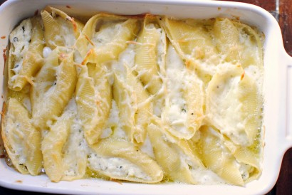

Champagne Cream Sauce Over Lemon Basil Ricotta Stuffed Shells
Ingredients
- 1 12 oz Box of Jumbo Pasta Shells
- 1 and a half cup Lemon Basil Ricotta
- 1 cup Pecorino Romano or Parmesan Cheese (grated)
- 3 Tablespoons of Butter
- 1 clove Minced Garlic
- 3 Tablespoons All-Purpose Flour
- 3/4 Cup Champagne
- 1/2 Cup Heavy Cream
- Kosher Salt and Black Pepper to Taste
Directions
Shells
- Preheat oven to 350 F
- Butter large baking dish
- Bring large pot of water to boil and season with kosher salt
- Cook jumbo shell pasta 2-3 minutes shy of al dente
- Season lemon basil ricotta with salt and pepper
- Mis half of grated pecorino/parmesan into ricotta
- Once shells are ready, drain and stuff with ricotta
- Place stuffed shells into buttered baking dish
Sauce
- Put small sauce pan on mediam heat and melt 3 tablespoons of butter
- Add clove of minced garlic ad cook until soft, but not browned
- Whisk in three tablespoons of flur to create roux
- Pour in champagne and heavy cream while whisking
- Let sauce bubble until thick (usually a few minutes)
- Add pepper and pour on stuffed shells
Baking
- Place into oven and bake until sauce is bubbling and cheese has melted (20-25 minutes)
- Add the rest of the pecorino/parmesan before serving
Find the origional recipe here!
Contact Me
email me!
The University of Montana
32 Campus Dr
Missoula, MT 59812